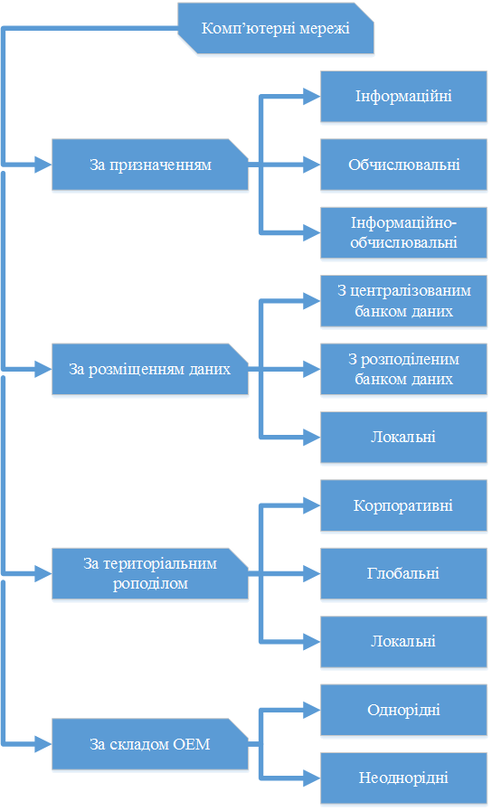

Існують різні класифікації комп'ютерних мереж, одна з них відображена на схемі ->

Комп'ютери, об'єднані в мережу, мають значно ширші можливості, ніж комп'ютери, які працюють окремо.
Локальні мережі
Локальна мережа об'єднує комп'ютери, що розташовані на невеликій відстані один від одного, і є замкнутою системою. Невеликі відстані між комп'ютерами дають можливість використовувати для зв'язку в локальних мережах звичайні проводові лінії. Окремим випадком локальної мережі є корпоративна мережа. Як правило, локальна мережа обмежена офісом, кабінетом інформатики, однією будівлею.
Локальні мережі повинні бути легко адаптованими, тобто мати гнучку архітектуру, яка дозволяє довільно розташовувати робочі місця, додавати або переставляти персональні комп'ютери або периферійні пристрої. Якщо така мережа організована грамотно, то вихід з ладу однієї із складових не впливає на роботу інших.
Локальна мережа створюється для спільного використання та обміну інформацією між комп'ютерами, спільного використання ресурсів мережі.
Ресурс мережі – це пристрої, що входять до апаратної частини деяких із комп'ютерів мережі, які доступні і можуть використовуватися будь-яким користувачем мережі. Ресурсами мережі можуть бути принтери, сканери, модеми, стримери, фотонабірні апарати, дискові накопичувані великої ємності, пристрої резервного копіювання інформації тощо.
Комп'ютер, ресурси якого призначені для спільного використання, називається сервером (від англ. to serve – постачати, обслуговувати). Комп'ютери, що використовують ресурси мережі, називають робочими станціями. Сучасні локальні мережі дуже різноманітні і можуть мати у своєму складі один або кілька серверів, комп'ютери, які одночасно можуть бути як сервером, так і робочою станцією.

Найзагальніший тип сервера – файловий, основний ресурс такого сервера - файли. Будь-який комп'ютер з одним або кількома жорсткими дисками можна використати як файловий сервер (навіть простої конфігурації як Pentium, 32-64 Мб RAM). Взаємодія серверів і робочих станцій забезпечується мережевим програмним забезпеченням кожного комп'ютера мережі. Користувачу робочої станції доступні ресурси мережі відповідно до заздалегідь обумовлених правил.
Призначення робочої станції- виконувати програми, одержані з мережі, а призначення сервера - доставляти ці програми до робочих станцій. Схему роботи, коли робочі станції виконують велику частину опрацювання даних, а файл-сервер надає файли для цього опрацювання, називають розподіленим опрацюванням. Схема опрацювання, за якою робота розподіляється між робочою станцією і файлом-сервером рівномірно, називається системою «клієнт-сервер». Як правило, таке середовище складається із сервера баз даних (БД) (високошвидкісний процесор, що опрацьовує запити до БД) в поєднанні з робочими станціями.
Крім того, мережі розрізняють за іншими ознаками, наприклад:
Глобальні мережі
Глобальна мережа – це з'єднання локальних мереж і окремих комп'ютерів, розташованих далеко один від одного. У таких мережах є додаткові пристрої для опрацювання великих обсягів даних та пересилання їх на велику відстань. Передусім, це сервери глобальних мереж, які є дуже потужними комп'ютерами. Через великі відстані між комп'ютерами використання звичайних проводових ліній зв'язку в глобальних мережах неможливе. Сучасні глобальні мережі використовують телефонний та супутниковий зв'язок. Проте зв'язок між серверами глобальної мережі здійснюється не через звичайні телефонні лінії, а через виділені лінії або через спеціальні канали зв'язку.
Виділена телефонна лінія використовується лише для передавання інформації між комп'ютерами в мережі. Вона має високу швидкість передавання та перешкодостійкість. Канали зв'язку мають ті самі властивості, однак з вищими якісними характеристиками.
Найбільшою у світі глобальною мережею є мережа Internet. Вона охоплює всю земну кулю.
Глобальна мережа Internet та її можливості
Internet – це всесвітня комп'ютерна мережа, яка об'єднує в єдине ціле десятки тисяч різнотипних локальних і глобальних мереж. Internet об'єднує мільйони комп'ютерів, нею користуються десятки мільйонів людей.
Протоколи мережі Internet
Internet – це система взаємопов'язаних мереж, до її складу входять комп'ютери різних типів. Для зв'язку між ними використовуються різні канали зв'язку.
Найпоширенішими є телефонна лінія (двожильний провід). Поряд з ним використовується супутниковий зв'язок, радіоефір, оптико-волоконний кабель, телевізійний кабель. Взаємодія всіх об'єктів мережі забезпечуються використанням спільного мережевого протоколу – своєрідної мови спілкування комп'ютерів між собою. Протокол є стандартом, який задає порядок обміну повідомленнями на рівні електричних сигналів. Загальноприйнятим протоколом в мережі Інтернет є TCP/IP (Transmission Control Protocol/Internet Protocol). Свою назву протокол TCP/IP став від двох комунікаційних протоколів (або протоколів зв'язку). Це Transmission Control Protocol (TCP) і Internet Protocol (IP). Незважаючи на те, що в мережі Internet використовується велика кількість інших протоколів, її часто називають ТСР/ІР- мережею, так що ці два протоколи, безумовно є найважливішими.
У мережі Internet для передачі даних використовують принцип комутації пакетів. Дані, які циркулюють в інформаційному полі, розбиваються на невеликі блоки і вкладаються в так звані пакети. Кожний пакет, крім власне самих даних, містить заголовок зі службовою інформацією, де вказується адреса відправника, адреса одержувача, номер пакета у повідомленні тощо. Пакети передаються від одного вузла Internet до іншого, розташованого ближче до адресата. Пакети одного і того ж самого повідомлення навіть можуть бути передані різними шляхами. Якщо передача пакета була невдалою, то вона повторюється. У пункті призначення пакети впорядковуються і збираються в один документ. Протокол TCP відповідає за те, як документи розбиваються на пакети і як потім збираються докупи, а протокол IP відповідає за те, як пакети досягають адресата.
Взагалі, термін ТРС/ІР зазвичай означає усе, що пов'язано з протоколами взаємодії між комп'ютерами в Internet. Він охоплює ціле сімейство протоколів, прикладні програми, і навіть саму мережу. TCP/IP – це технологія мережевої взаємодії, технологія Internet.
В Internet існує 7 рівнів взаємодії між комп'ютерами: фізичний, логічний, мережевий, транспортний, рівень сеансів зв'язку, представницький і прикладний рівень. Кожному рівневі взаємодії відповідає набір протоколів (тобто правил взаємодії). Протоколи фізичного рівня визначають вид і характеристики ліній зв'язку між комп'ютерами. У Internet використовуються практично усі відомі в даний час засоби зв'язку від простого дроту (кручена пара) до волоконно-оптичних ліній зв'язку (BOJI3).
Для кожного типу ліній зв'язку розроблений відповідний протокол логічного рівня, що займається управлінням передачею інформації з каналу зв'язку. До протоколів логічного рівня для телефонних ліній належать протоколи SLIP (Serial Line Interface Protocol) і PPP (Point to Point Protocol). Для кабельного зв'язку локальної мережі – це пакетні драйвери плат локальної мережі.
Ідентифікація комп'ютерів в мережі. Адресація в Internet
Кожен комп'ютер, під'єднаний до Internet, має свою унікальну адресу, навіть при тимчасовому з'єднанні. Адреса в Internet однозначно задає місцезнаходження комп'ютера в мережі. Для цього використовується спеціальна система адрес, що мають назву ІР-адреси.
IP-адреси використовуються для ідентифікації комп'ютерів у мережі. ІР-адреса завжди має довжину 32 біти і складається з чотирьох частин, які називаються октетами (octet). Чотири частини об'єднуються в запис, в якому кожний октет відокремлюється крапкою, наприклад, 198.68.191.10. За своєю структурою кожна 32-бітова IP-адреса поділяється на дві частини – префікс і суфікс, які утворюють дворівневу ієрархію. Префікс означає фізичну мережу, до якої підключений комп'ютер, а суфікс – окремий комп'ютер у цій мережі. Яка частина адреси належить до префікса, а яка – до суфікса, визначається значеннями перших чотирьох бітів, і відповідно до цього вони поділяються на три основні класи А, В і С. Для забезпечення максимальної гнучкості IP-адреси виділяють організаціям залежно від кількості мереж і комп'ютерів в організації відповідно до цих класів.
Мережі класу А належать найбільшим світовим постачальникам послуг Internet, їх кількість становить 126, і кожна з них може мати майже 17 мільйонів комп'ютерів.
Мережі класу В – середнього масштабу, їх кількість може трохи перевищувати 16 тисяч, і в кожній з них 65 534 хостів. Такі мережі мають найбільші університети та інші великі організації.
Мережі класу С належать дрібним постачальникам, кількість мереж може перевищувати 2 мільйони, а кількість комп'ютерів у кожній мережі досягає 254. Саме до цього класу належать мережі переважної більшості провайдерів Internet.
Якщо довільну IP-адресу символічно позначити як набір октетів w.x.y.z, в узагальненому вигляді структуру IP-адрес для основних класів А, B, C можна подати у вигляді таблиці 1:
| Клас мережі | Значення першого октету (w) | Октет номера мережі | Октет номера XOCTV | Кількість мереж | Кількість хостів у мережі |
|---|---|---|---|---|---|
| A | 1-126 | W | x.y.z | 126 | 16777214 |
| B | 128-191 | W.X | y.z | 16384 | 65534 |
| C | 192-223 | w.x.y | z | 2097151 | 254 |
Наведена таблиця дає змогу за відомою IP-адресою комп'ютера швидко визначити клас мережі, її номер і номер комп'ютера в мережі Наприклад, комп'ютер з ІР-адресою 221.132.3.123 розміщений у мережі класу С з ідентифікатором мережі 221.132.3 і має в цій мережі ідентифікатор 123.
Для того, щоб відділити префікс від суфікса, в IP-адресі застосовується спеціальне-бітне число, яке називається маскою мережі. За своєю структурою маска є таким самим набором з чотирьох октетів, що і звичайна IP-адреса. У таблиці 2 наведено маски підмереж, які використовуються за замовчуванням для мереж класів А, В і С. Маски підмереж застосовуються також для логічного поділу великих мереж на підмережі меншого масштабу.
| Клас мережі | Значення маски |
|---|---|
| A | 255.0.0.0 |
| B | 255.255.0.0 |
| C | 255.255.255.0 |
Уявімо людину, яка користується мережею і регулярно відвідує не один, а декілька десятків чи навіть сотень комп'ютерів Internet. Такому користувачеві потрібно запам'ятати велику кількість наборів цифр, тому йому на допомогу розроблено спеціальну літерну адресацію – DNS (Domain Name System).
Згідно з DNS-адресацією, всі комп'ютери мають імена адрес, які складаються із сукупності літер, також розділених крапками. Наприклад, www.sumdu.edu.ua. По-перше, літери запам'ятати легше, по-друге, структура DNS-адреси має чітку логіку. Отже, комп'ютери передають інформацію за допомогою цифрових адрес, а користувачі при роботі з Інтернетом використовують, в основному, імена адрес. Існують організації, що займаються перевіркою і видачею адрес. Тому не можна самостійно присвоювати собі довільну адресу. Розглянемо дещо детальніше структуру імені адреси.
У мережі Internet використовується доменний спосіб адресації, коли весь простір адрес абонентів поділяється на області, які називаються доменами. Така адреса аналізується справа наліво, на крайній правій позиції є домен першого рівня, який дає найбільш загальну інформацію. Він може бути двох видів: вказувати або на тип організації, що є власником комп'ютера, або на країну, в якій комп'ютер знаходиться.
Існує сім варіантів доменів, що вказують на тип організації:
Домен, що вказує на країну, складається з двох літер, які, як правило, повторюють міжнародний код держави: ua – Україна, ru – Росія, us – СШ А, uk – Великобританія, fr – Франція. В імені допускається будь-яка кількість доменів, але найчастіше використовують імена з кількістю доменів від трьох до п'яти. Кожен власник, який має домен, може створювати і змінювати адреси, що знаходяться під його контролем. Наприклад, якщо в університеті з адресою www.sumdu.edu.ua існує факультет електроніки та інформаційних технологій, то задля його найменування університет не зобов'язаний одержувати жодного дозволу; достатньо лише додати нове ім'я до опису адрес свого домена, наприклад, elit. В результаті кожен користувач мережі Internet може звертатися до цієї групи за адресою www.elit.sumdu.edu.ua.
Для доступу до мережі Internet використовують декілька способів. Одними із поширених є звичайне додзвонювання та безпосередній доступ через виділені лінії. Звичайне додзвонювання (Dialup Connection) передбачає приєднання вашого ПК до комп'ютера-посередника, який працює в мережі, що є частиною Internet. Такий комп'ютер, як правило, є комп'ютером організації, що пропонує послуги з приєднання до Internet і називається провайдером послуг. Зв'язок дій здійснюється часто за допомогою звичайних телефонних ліній. Для цього потрібно, щоб на ПК користувача був встановлений модем та комунікаційне програмне забезпечення. Такий спосіб доступу є дешевим, але швидкість передачі даних при цьому мала. Кращим є спосіб безпосереднього доступу через виділені лінії (dedicated line connection). Він є дорожчим, але забезпечує набагато кращі якість зв'язку і швидкість передачі інформації. Цей спосіб використовують державні організації', приватні компанії, які мають власну мережу.
Основні послуги Internet
Широковідомою послугою Internet є всесвітня система розсилання і отримування електронної пошти, яку називають e-mail. По суті, електронна пошта є головною частиною потоку інформації в Internet, і багато людей користуються лише цією послугою. Дешевизна електронної пошти та оперативність, з якою повідомлення можна відправляти багатьом адресатам у всьому світі, роблять її популярною формою зв'язку.
В Internet також популярні групи новин Usenet. їх ще називають телеконференціями або електронними дошками оголошень, оскільки вони дозволяють обмінюватися інформацією деякій кількості зацікавлених осіб. Для цього на комп'ютерах-серверах, які обслуговують телеконференцію, виділяється спеціальна ділянка пам'яті. Існують тисячі груп новин, і, коли користувач отримав доступ до Usenet, він може підключитися до них безкоштовно.
Частина Internet, яка називається World Wide Web (WWW або Всесвітня павутина), дозволяє авторам по-новому використати стару систему приміток. Зокрема, коли автор звичайної журнальної статті чи книжки вводить символ примітки, ми дивимося униз сторінки і знаходимо посилання на іншу сторінку або книжку. Автори комп'ютерних документів Internet, по суті, роблять те саме, використовуючи технічний прийом, за допомогою якого в документі підкреслюється чи виділяється слово, фраза, малюнок. Виділення об'єкта говорить читачеві, що в Internet є додатковий ресурс (часто це інший документ). Цей документ з Internet можна викликати, і він відразу відкриється на екрані. WWW також дає можливість зберігати і відтворювати графічні зображення, відеофільми, звукові записи тощо. Використовуючи так звані програми-броузери, можна легко і швидко переглядати інформацію, яку зберігають комп'ютери у різних країнах.
В Internet зберігається велика кількість файлів. Використовуючи сервіс FTP (File Transfer Protocol) можна одержувати і передавати файли. Цей сервіс залишається одним із основних способів розповсюдження безкоштовних програм, різних доповнень і поправок до комерційних програм.
Ще однією популярною послугою Internet є Internet Relay Chat або Chat (балачка). Chat дозволяє групі людей швидко надсилати одне одному повідомлення. Створюються так звані Chat-канали або Chat-кімнати, в яких обговорюється якась конкретна тема. Ця система схожа на групи новин, але обмін повідомленнями в ній здійснюється без затримок. Під'єднавшись до групи, що обговорює ту чи іншу проблему, ви набираєте своє повідомлення на клавіатурі, і воно миттєво стає доступним іншим учасникам розмови. Аналогічно можна спостерігати на екрані комп'ютера повідомлення інших співрозмовників зразу після того, як вони їх набрали на клавіатурі свого комп'ютера...
Більше інформації у розділах: